马克龙的“第二故乡”—人情味满满的比利牛斯山
法国旅游发展署 ·
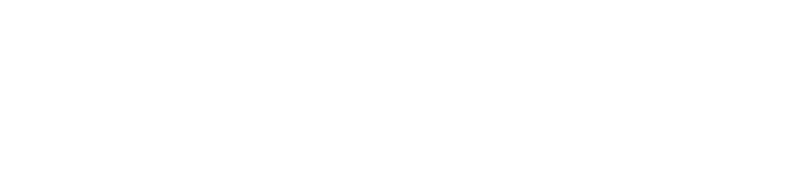
马克龙又带我们去旅行了～
这一次，大概是他心里最柔软的地方～
他的「外婆家」
巴涅尔德比戈尔
(Bagnères-de-Bigorre)
在法国西南角，上比利牛斯省，
巴涅尔德比戈尔
安静地坐落在比利牛斯山脉的中心。
山村景象，另有一番辽阔怡人。
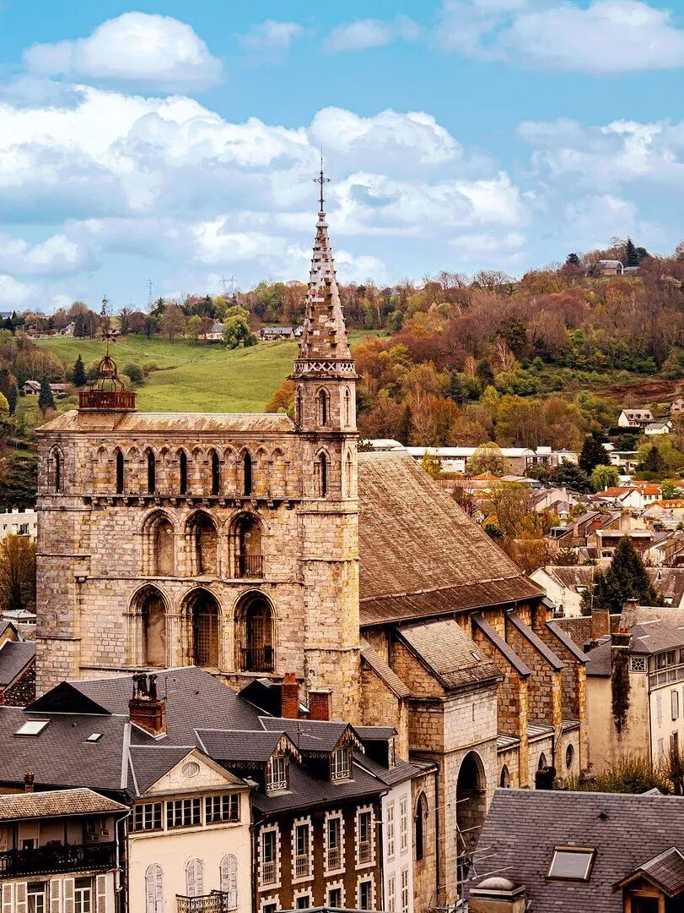
©Ville de Bagnères-de-Bigorre
每逢寒暑假，和我们大家一样，马克龙回来外婆家小住。马克龙的外婆杰曼·诺盖斯 (Germaine Noguès) 对他的成长影响很大，她曾是地理老师和当地学校的校长。从马克龙亲戚的回忆中，我们知道外婆不仅会督促马克龙学习，还总是为他解疑答惑，言传身教，从语法、历史、地理到音乐和古典文学。他对文学的一往情深最早就来自他外婆的影响。
在这个宁静的山镇里，
藏满了马克龙儿时的回忆。
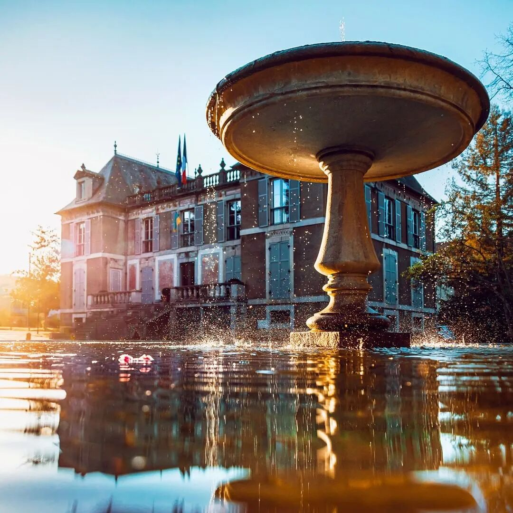
©Ville de Bagnères-de-Bigorre
巴涅尔德比戈尔 (Bagnères-de-Bigorre) 被评为「鲜花小镇」，也是一个享受温泉的地方，是上比利牛斯省的第一个水疗度假胜地，每年来泡水的客人超过了 7,500 多名。
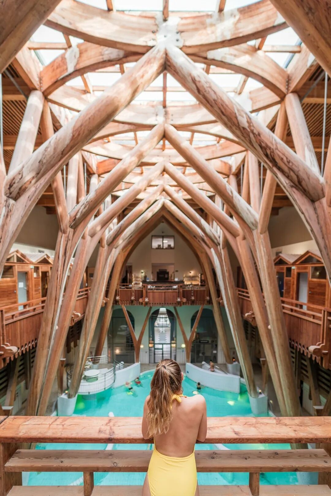
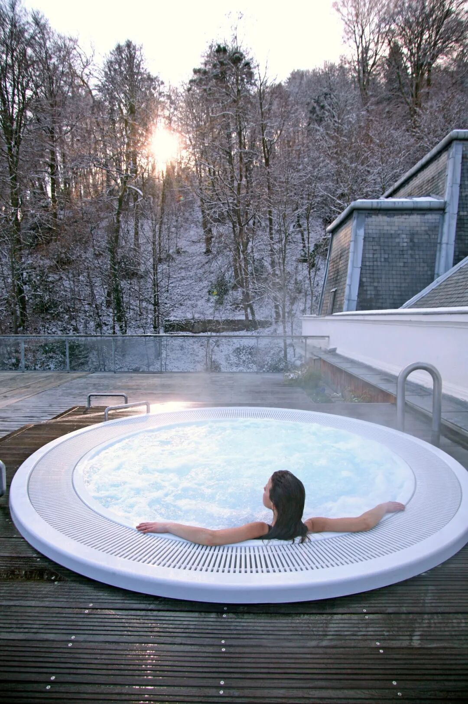
©Aquensis-Chloé Penderie, Pixbynot-CRTL Occitanie
小镇上依旧保留着中世纪的众多古迹，如圣让教堂、雅各宾塔 (Tour des Jacobins) 和老城墙，虽不宏伟惊人，但却抚慰了岁月。
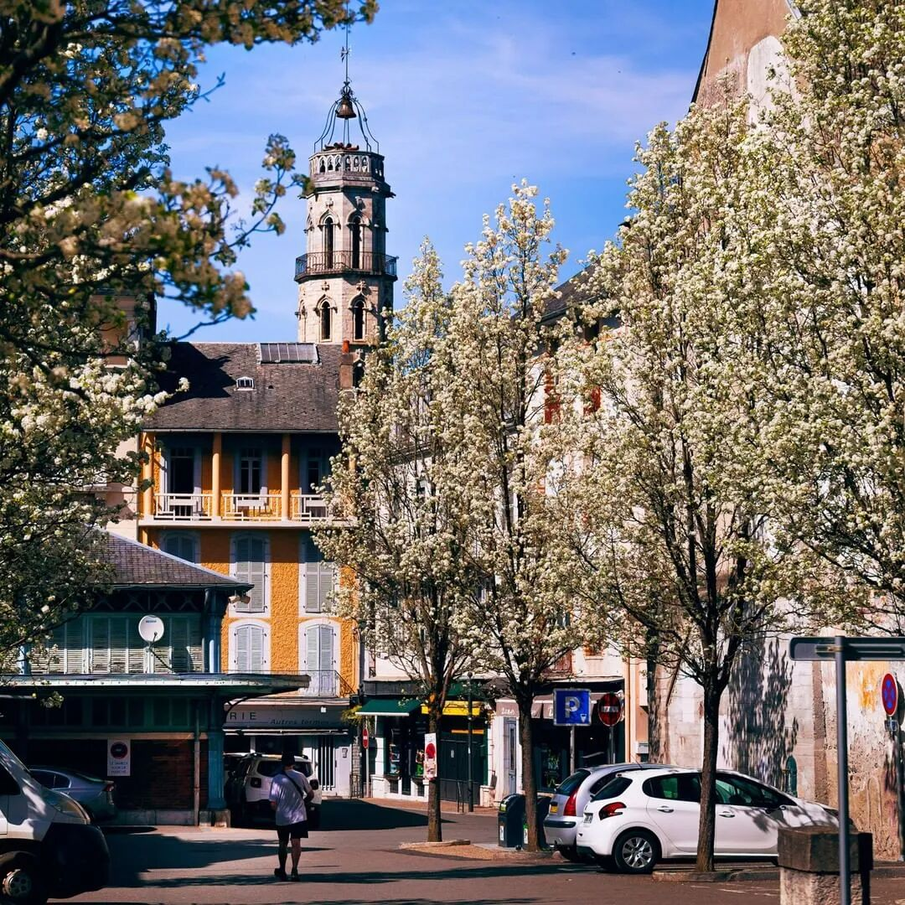
©Ville de Bagnères-de-Bigorre

儿时写作业的糖果店

波德莱尔糖果店
Patisserie Bordelaise
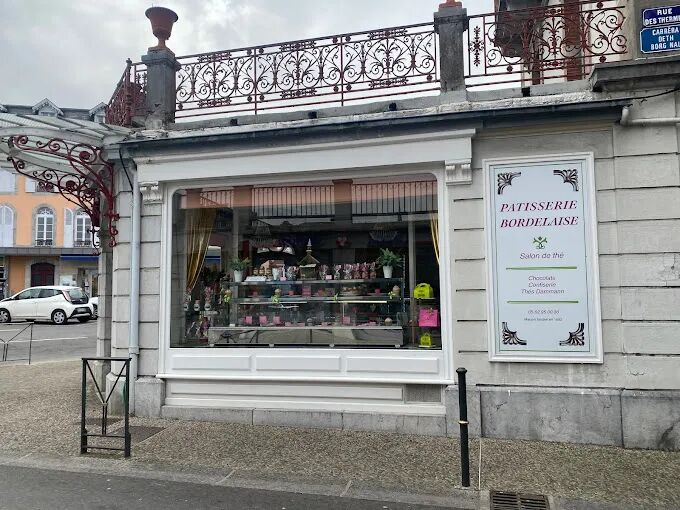
©Rémi D(BBK)
镇上的波德莱尔糖果店 (Patisserie Bordelaise)，是马克龙小时候常去光顾的地方，据店主人说，他小时候常常来这里写作业，比一般的小孩子都要认真。
1 All. des Coustous, 65200 Bagnères-de-Bigorre

马克龙的老友私房菜

牧羊人驿站
L'Étape du Berger
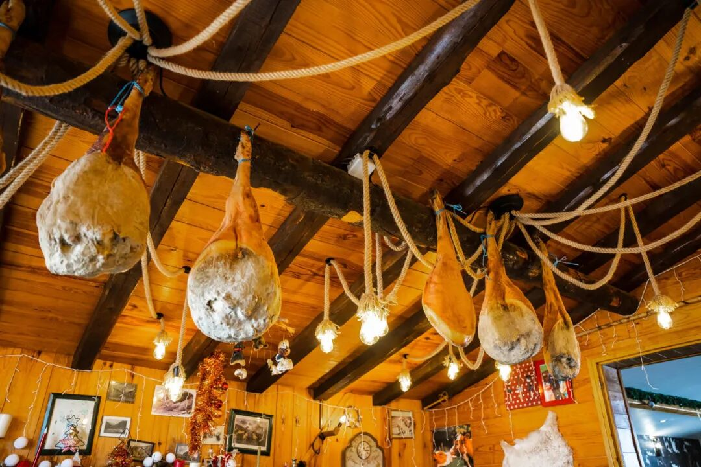
©L'Étape du Berger
这家挨着环法自行车赛的传奇之地——图尔马莱山口 (Col du Tourmalet) 的餐馆，自 1969 年开业以来，一直飘着比利牛斯山最传统的味道，如今的餐厅主人 Eric Abadie 是家族第三代经营者，同时他也是马克龙的儿时好友。这个温馨的餐馆最近刚刚招待了我们的国家领导人们。
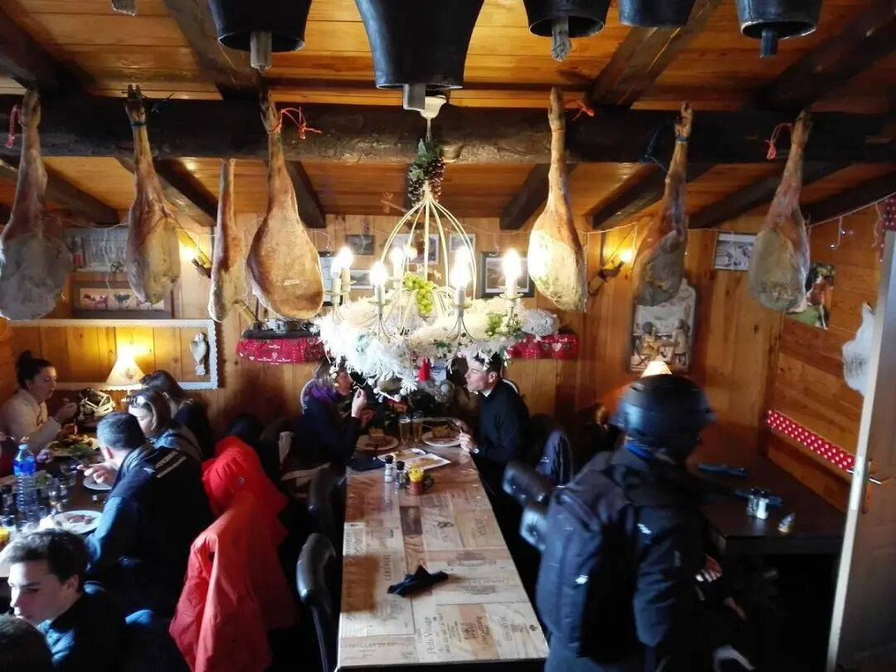
©fr.restaurantguru.com
自家牧场到餐桌，从食材到菜谱，
都是由 Abadie 家族运转，
地道和传统的法式菜肴，
老式木屋、主人亲切的微笑，
一直是这家餐馆征服客人的秘籍。
• 实 用 信 息 •
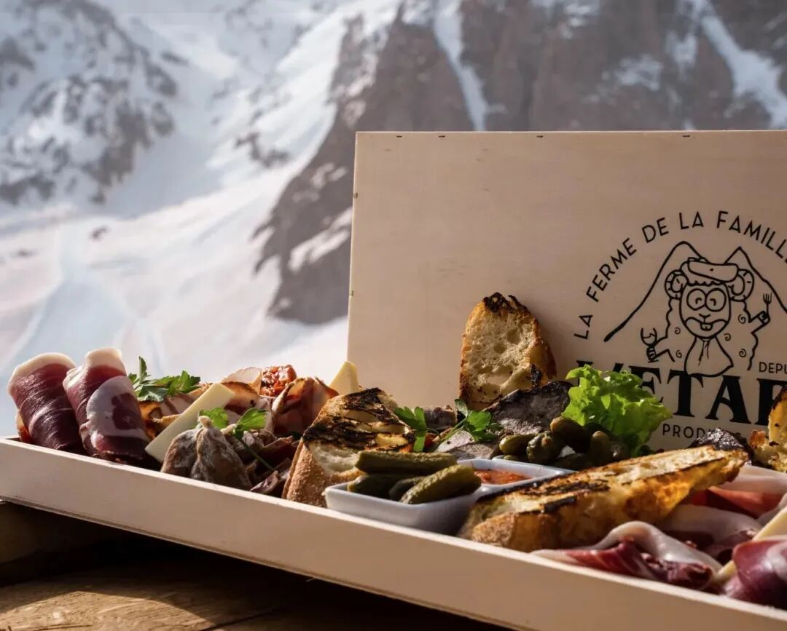
©L'Étape du Berger
Col Tourmalet, en haut du béarnais, 65200 La Mongie
建议驾车
夏季5 月和 6 月的周末、
7 月 1 日至 9 月 24 日以及 10 月的周末开放；冬季12 月初至 4 月初开放
05 62 91 95 44 或 06 08 00 83 81（提前预定）
https://www.etapeduberger.com/
为了欢迎来自中国的尊贵客人，马克龙特意在「朋友家」设宴，此处附上菜单，看看大人物们在比利牛斯山都吃了啥！总结概况都是 “接地气” 的家常菜：
菜 单
Garbure 炖汤
煨羊肩肉
黑猪火腿配塔布豆和牛肝菌
多米尼克·布柴 Dominique Bouchait
精选的奶酪拼盘
他是法国顶级奶酪大师，拥有法国最出色工匠荣誉 (Meilleur ouvrier de France)
甜点：蓝莓馅
第一夫人布丽吉特特别推荐
葡萄酒：蒙特斯红葡萄酒 Montus rouge 和圣蒙特白葡萄酒 Saint Mont blanc
法小旅顺便撩了一眼马克龙的礼物清单，都是咱能 get 到的同款~
比利牛斯山羊毛毯
雅文邑白兰地 Armagnac
蒙图酒庄 Château Montus 葡萄酒
环法自行车赛的黄色领骑衫
Maillot jaune du Tour de France

最爱滑雪场
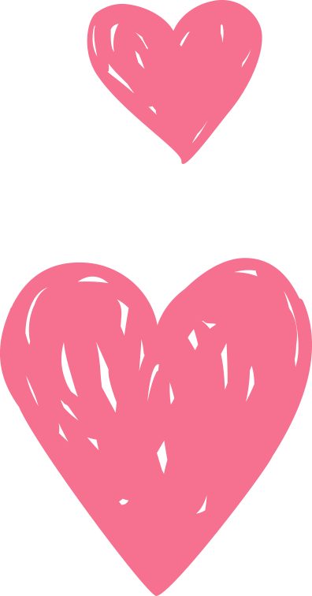
大图尔马莱-拉姆吉滑雪场
La Mongie Grand Tourmalet
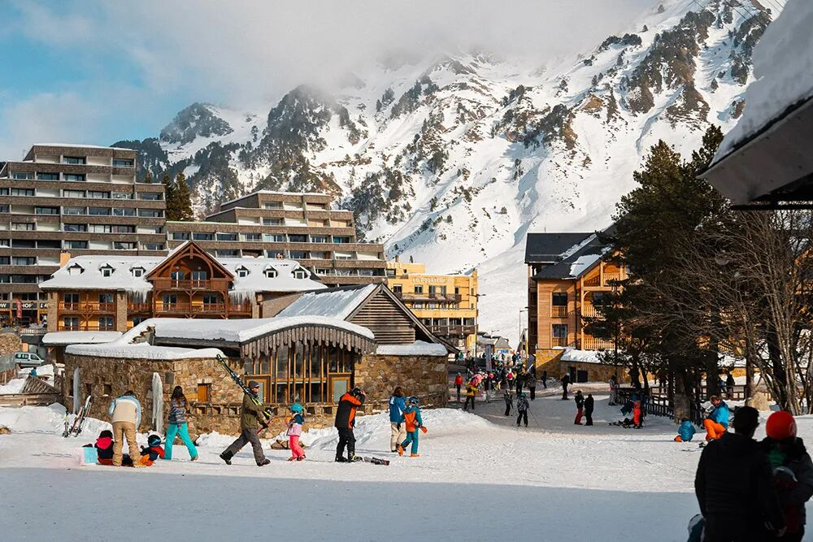
©Office de tourisme Tourmalet Pic du Midi
马克龙最爱的滑雪场之一，有时圣诞假期总统会带着夫人来这里滑雪。这片绵延 100 多公里雪场就在图尔马莱山口附近，连接着拉姆吉 (La Mongie) 和巴热斯 (Barèges) 镇，这是比利牛斯山脉最大的滑雪场。
在冬季，近 300 公顷的雪坡将成为游客们的天堂，69 条不同的滑雪道可以尽情撒欢，初级、高级雪道和自由式滑雪区、森林雪地、家庭雪上游乐区、越野滑雪区等，只要你有精力，可以挨个儿耍。
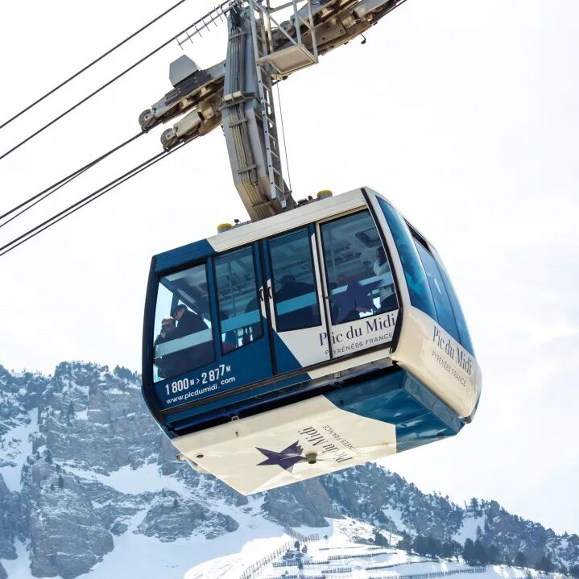
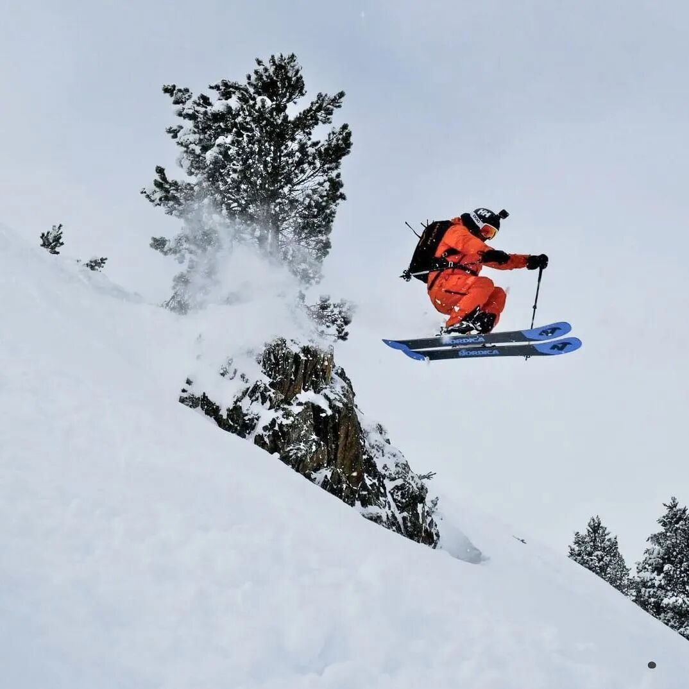
©iStock-pixinoo, Office de tourisme Tourmalet Pic du Midi
体能耗电，那就在附近的度假村、酒店以及室外温泉和水疗中心放松，学生党们还可以凭学生证享受雪票优惠。

传奇周边

— 自然观景台 —
南比戈尔峰
Pic du Midi de Bigorre
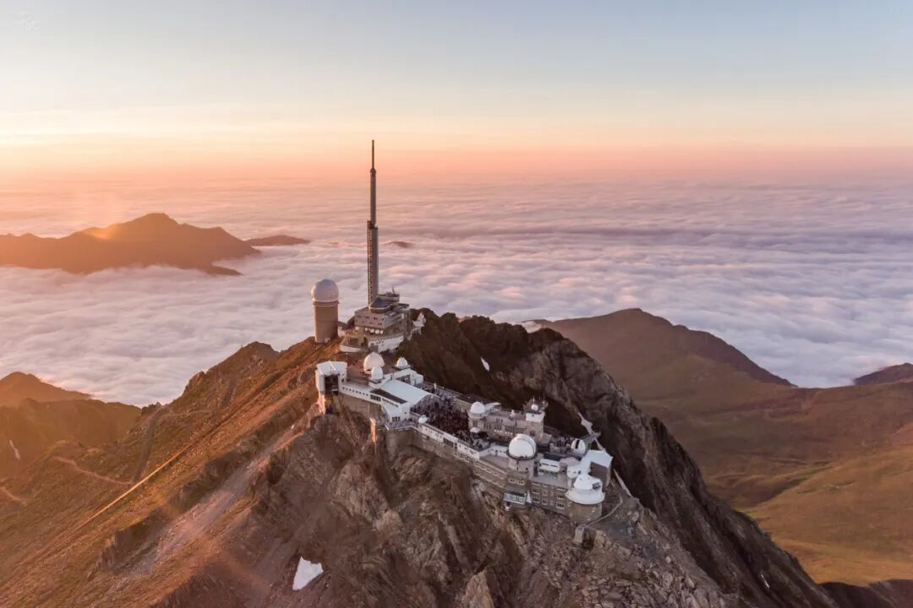
©Office de tourisme Tourmalet Pic du Midi
这座独揽自然之美的观景台
还是法国国际星空保护区
海拔 2,877 米，四季交替， 日出日落
一幕幕跟着时间调出的梦幻奇观
都是电影大片
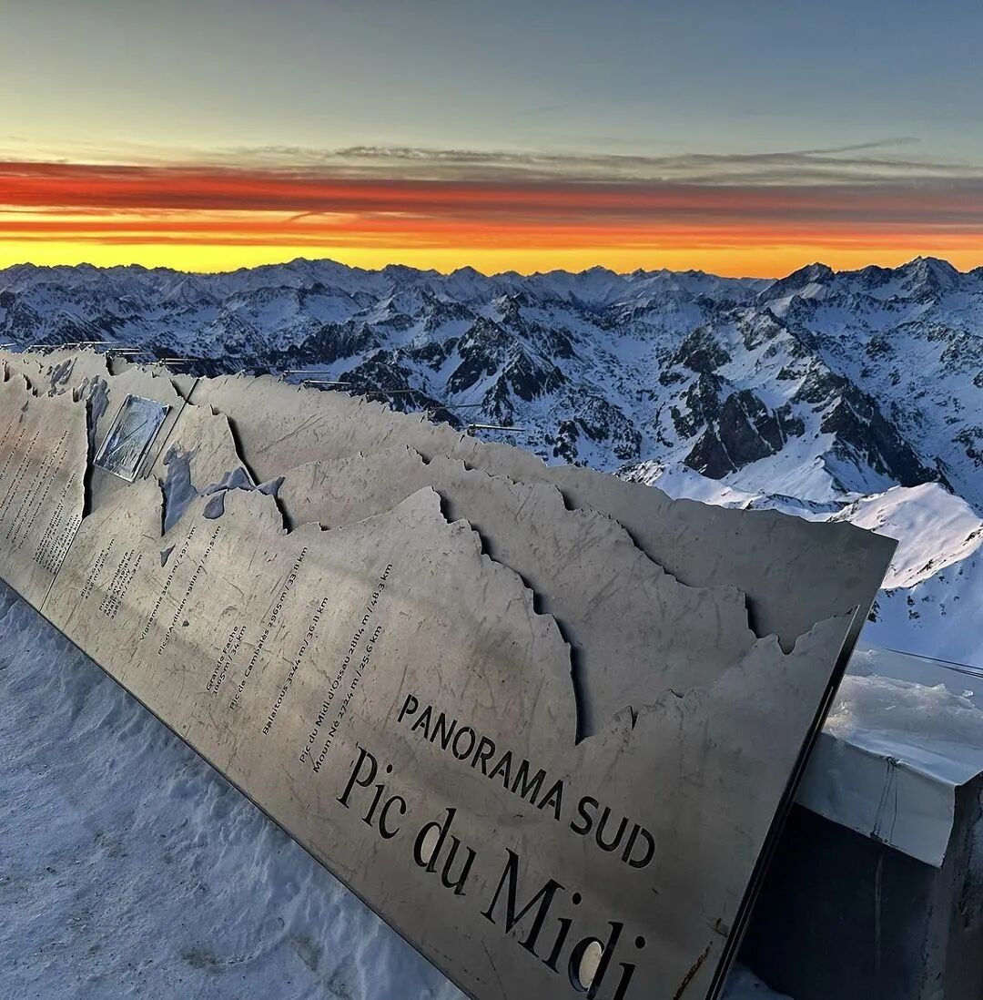
©Office de tourisme Tourmalet Pic du Midi
乘坐缆车登上山顶，目之所及，是无边无际的纯净天空和云海，12 米长的空中浮桥与天文观测台对望，有种时间静止的震撼美。
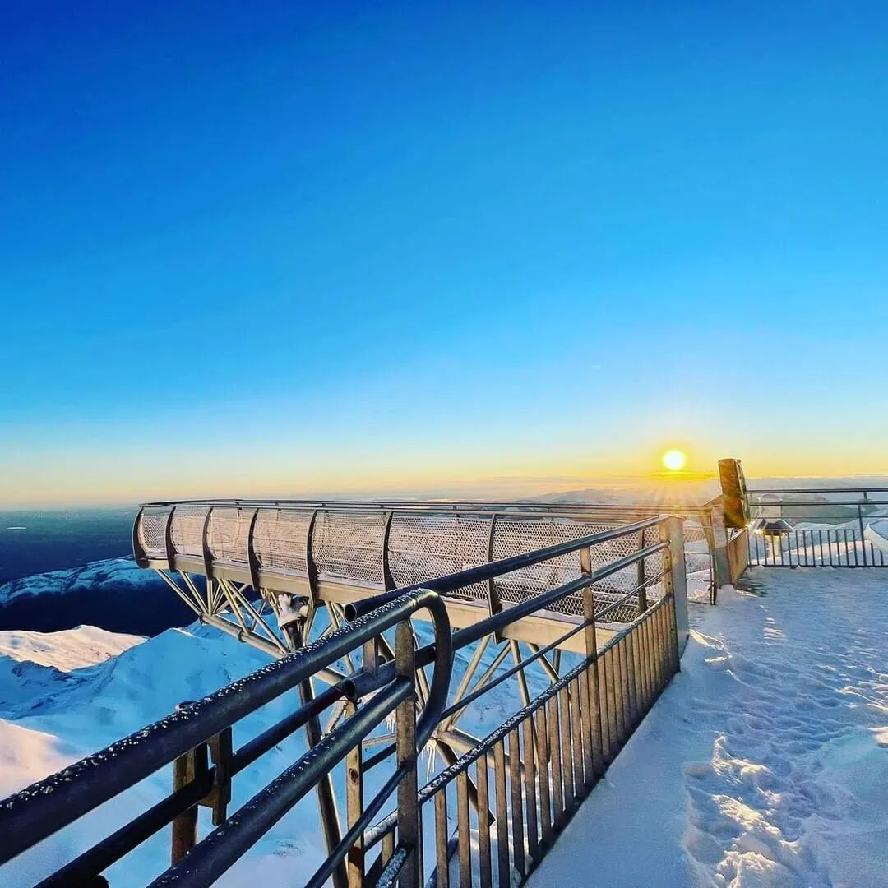
©Office de tourisme Tourmalet Pic du Midi
如果你是天文爱好者，亦或是相望繁星密布的夜空，南比戈尔峰的天文馆内藏着整个星空宇宙，仲夏夜观星和峰顶过夜是这里的专属浪漫，记得提前在官网预定。
— 环法自行车赛的传奇之地 —
图尔马莱山口
Col du Tourmalet
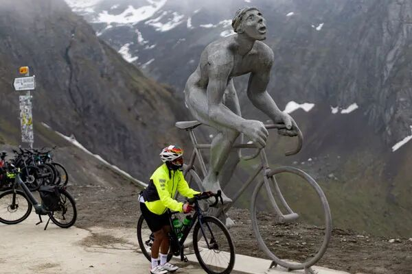
©Office de tourisme Tourmalet Pic du Midi
而南比戈尔峰山脚下的图尔马莱山口 (Col du Tourmalet) 以高海拔、崎岖陡峭的地势成为环法自行车赛的传奇赛段，难度和挑战都让人赞叹。所以，大家知道为什么山口附近的牧羊人驿站餐厅里，马克龙的礼物为啥要包含一件黄色领骑衫了吧～
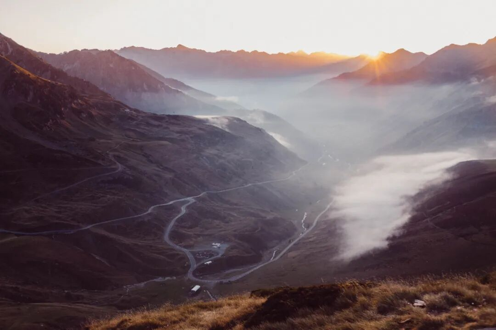
©iStock-Andreas Schoenberger
在欧西塔尼古语中，图尔马莱 Tourmalet 意为 “远山”，在法语中意为“艰难的转弯”，可见他对环法车手的带来的挑战。1910 年的环法自行车赛首次将这段道路划入赛事地图中，这也让图尔马莱成为环法最为经典的高难度爬坡段。
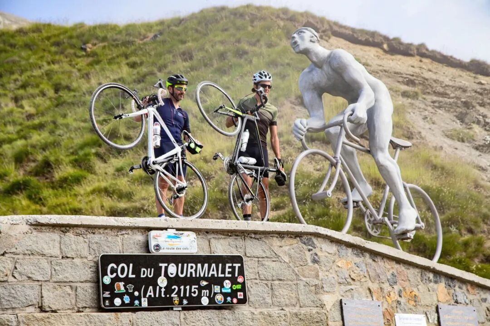
© LESLEY WILLIAMSON-Guide Toulouse Pyrénées
历史上第一位登上图尔马莱坡顶的是法国车手奥蒂乌·拉皮兹 (Octave Lapize)，他也凭借惊人的爆发力夺得了当年的总冠军。
想来假期也不远了，
这个夏天来比利牛斯山避暑，
打卡总统的第二故乡，
别忘了带点同款土特产！


法小旅的官网有更多精彩消息